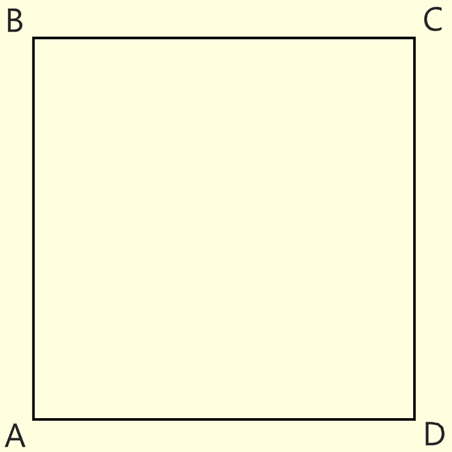

*
Квадрат

# Квадрат - четырехугольник, у которого все стороны и углы равны.
# Квадрат обладает всеми свойствами ромба и прямоугольника.
# Площадь квадрата равна стороне этого квадрата во второй степени (S = AB^2).
# Радиус вписанной в квадрат окружности равен половине стороны квадрата (r = AB/2).
# Площадь описанной вокруг квадрата окружности в двое больше площади вписанной в этот квадрат окружности.